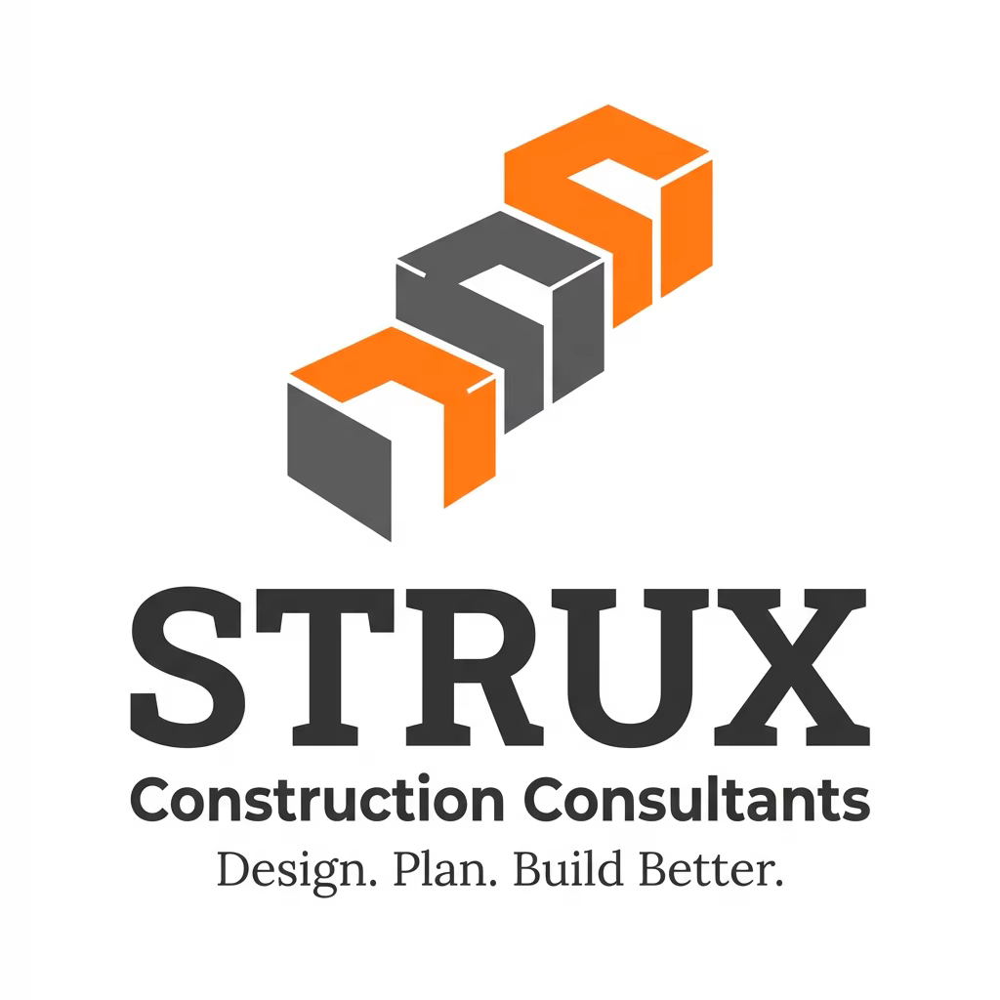

Construction & Project Gallery
Some example construction and renovation work related to our consultancy services.



Professional Construction Consultancy | Quantity Surveying | Project Management
STRUX Construction Consultancy is a professional consultancy firm specializing in providing expert guidance and technical support for construction and building projects.
We provide consultancy services including project planning, cost management, construction supervision, remodeling, and technical advisory support.
Our team assists clients throughout the entire project lifecycle — from planning and budgeting to construction and completion — ensuring projects are delivered safely, efficiently, and within budget.
Professional guidance for construction projects from concept to completion.
Structured project planning, scheduling, and management for efficient project delivery.
Cost estimation, budgeting, tender documentation, and financial monitoring.
Monitoring construction activities to ensure compliance with quality and safety standards.
Professional solutions for building upgrades, renovations, and remodeling.
Expert advice to support design, procurement, and construction decision-making.
Some example construction and renovation work related to our consultancy services.
To be a trusted and innovative construction consultancy recognized for delivering reliable, high-quality construction and remodeling solutions.
To provide professional construction consultancy and remodeling services through effective project management, accurate cost control, and expert technical guidance.
Director | Senior Quantity Surveyor
Mr. Kushan Waidyajeewa leads STRUX Construction Consultancy with professional expertise in quantity surveying, cost management, and construction project consultancy.
Email: projects.strux@gmail.com
Website: www.struxconsultancy.com
Phone: +94 76 4040 064